10 Juin 1944
En quoi Oradour-sur-Glane représente-il les crimes commis contre les civils pendant la seconde guerre mondiale ? Découvrir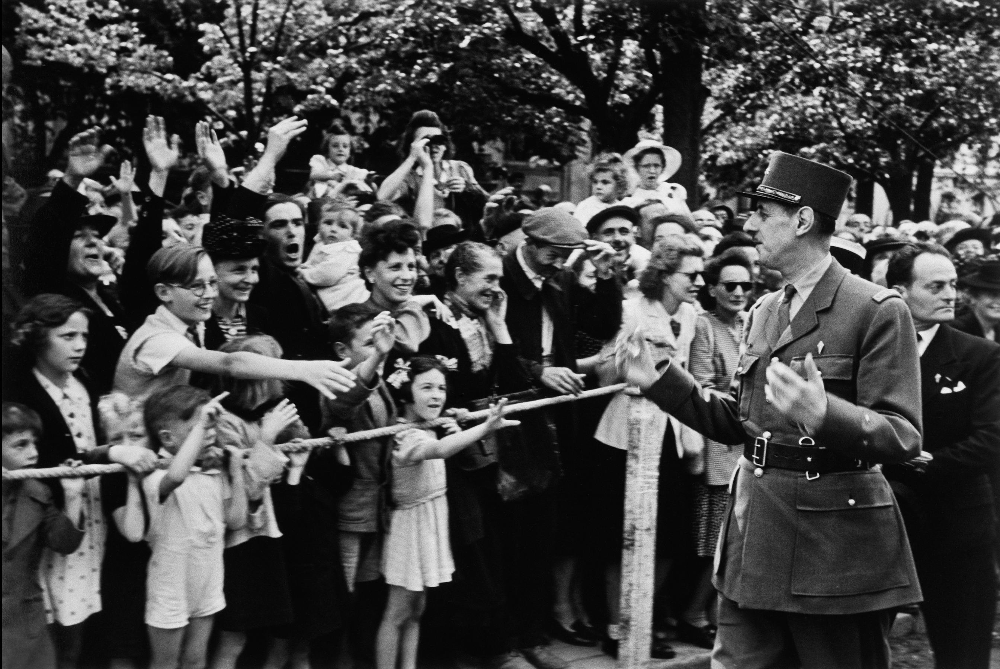
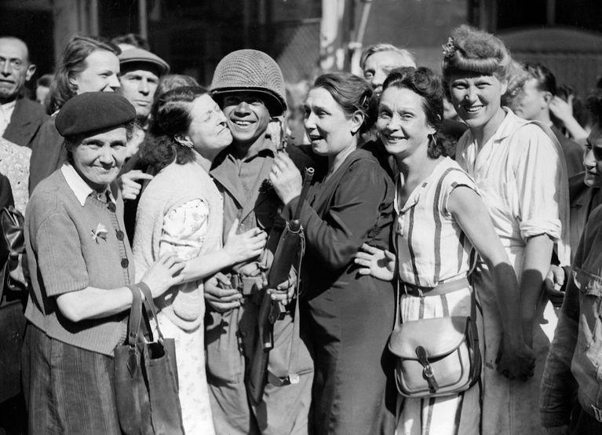
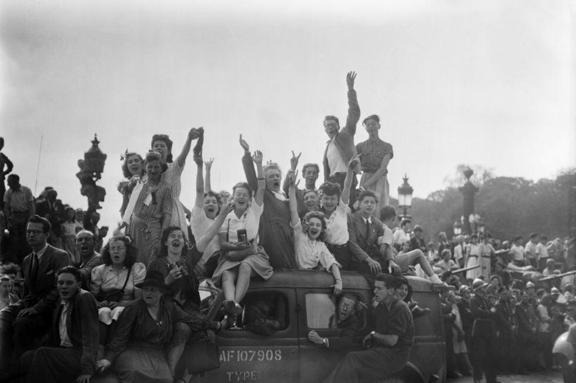
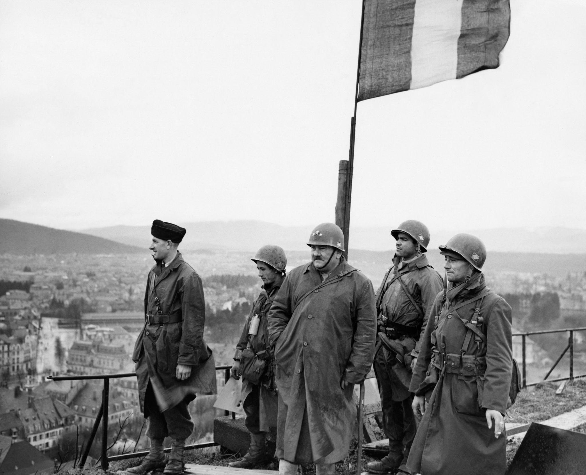
- La Seconde Guerre mondiale ;
- L'occupation de la France par l'Allemagne ;
- La présence des résistants ;
- Et la division SS Das Reich qui traverse la France en 1944.
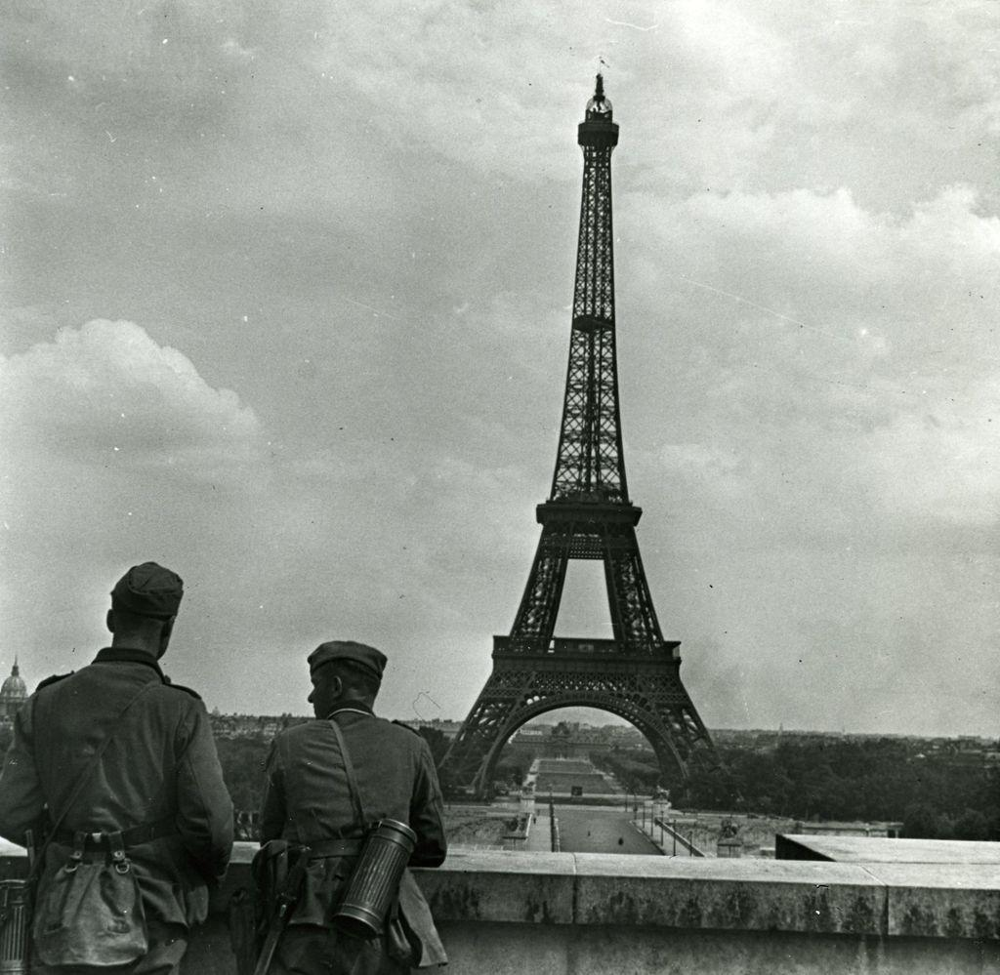
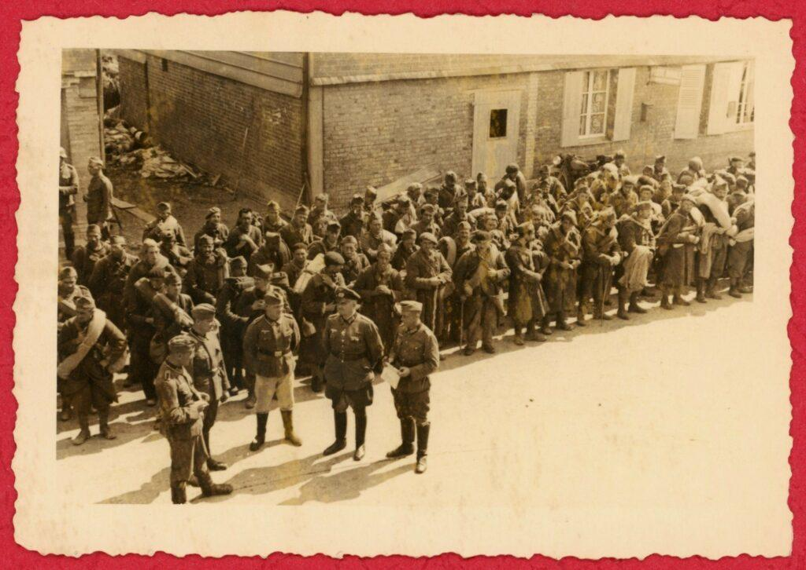
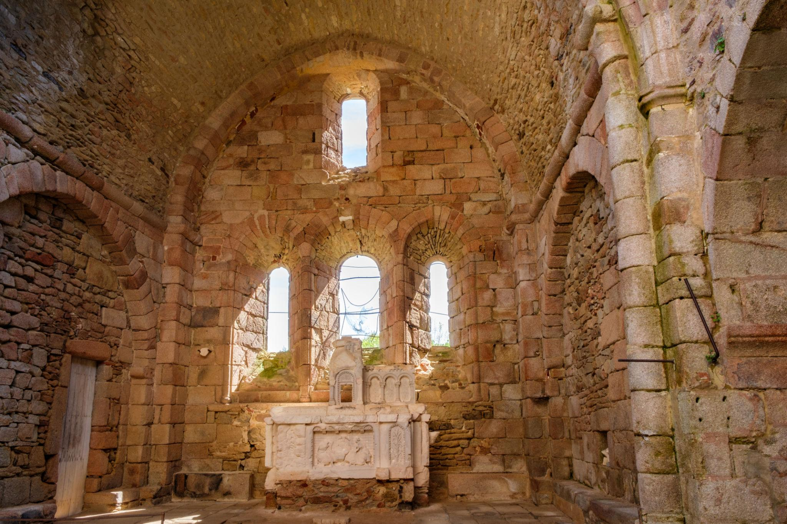
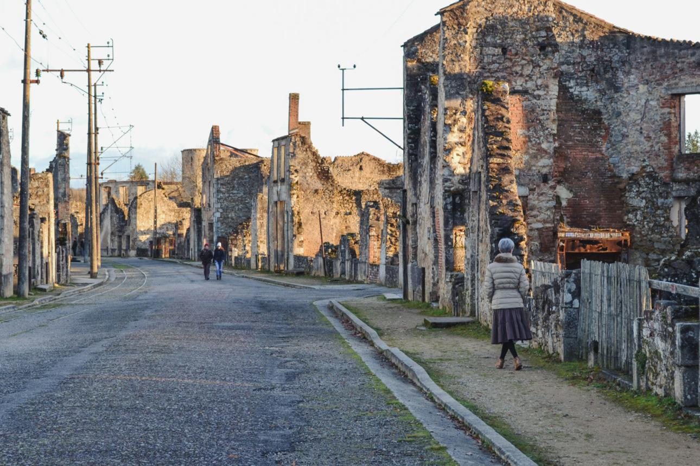
- L’arrivée des soldats allemands ;
- Les hommes fusillés ;
- Les femmes et enfants enfermés dans l’église ;
- L’incendie du village ;
Débarquement en Normandie.
Massacre d'Oradour-sur-Glane.
Décision de conserver les ruines.
Lieu de mémoire national.
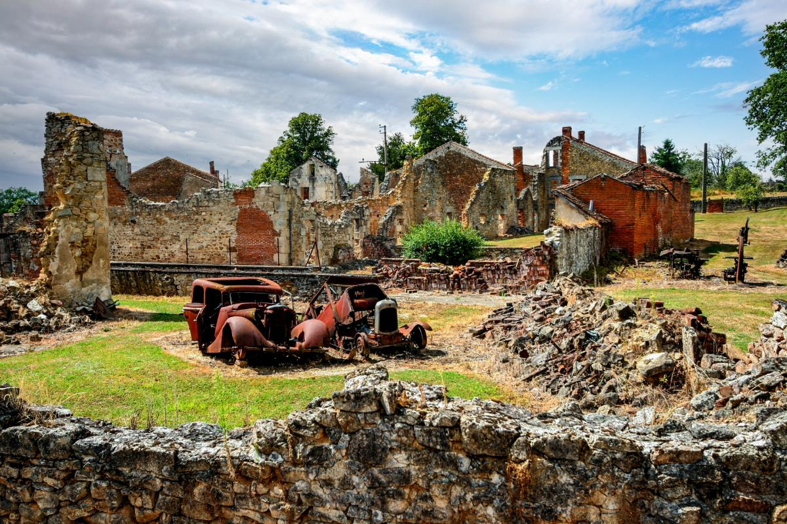
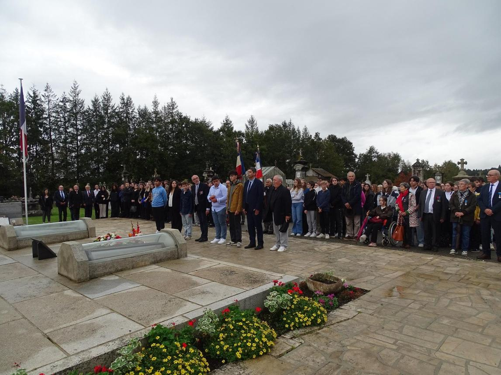
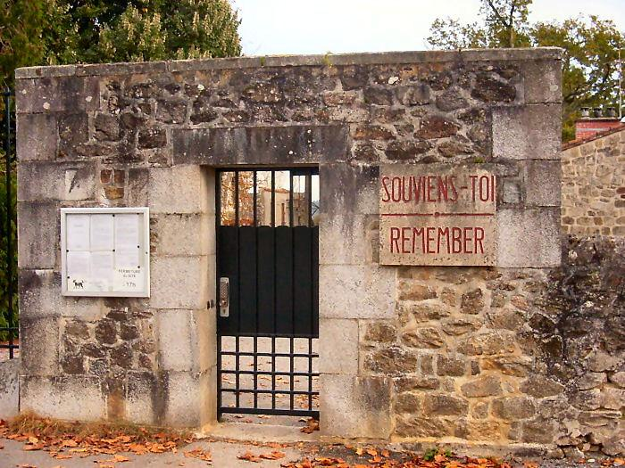
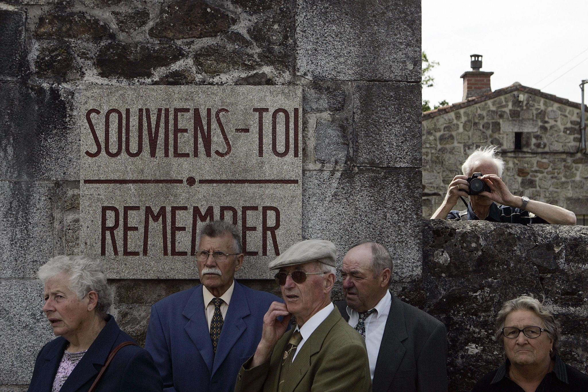
- Du village d’Oradour-sur-Glane conservé en ruines ;
- Des commémorations ;
- De l’importance de ne pas oublier ;
- Et de ce que ce massacre représente aujourd’hui en France.